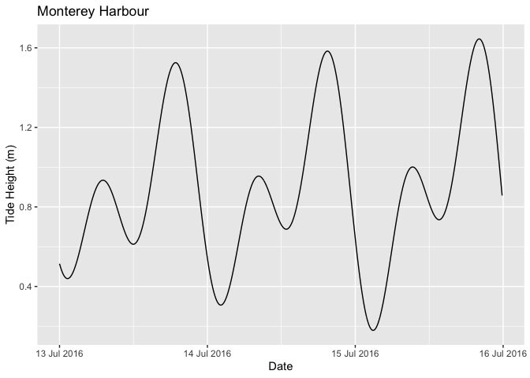

Introduction
rtide is an R package to calculate tide heights based on tide station harmonics.
It includes the harmonics data for 637 US stations.
Utilisation
library(tibble) library(rtide) #> rtide is not suitable for navigation data <- rtide::tide_height( "Monterey Harbor", from = as.Date("2016-07-13"), to = as.Date("2016-07-15"), minutes = 10L, tz = "PST8PDT" ) print(data) #> # A tibble: 432 x 3 #> Station DateTime TideHeight #> <chr> <dttm> <dbl> #> 1 Monterey, Monterey Harbor, California 2016-07-13 00:00:00 0.514 #> 2 Monterey, Monterey Harbor, California 2016-07-13 00:10:00 0.496 #> 3 Monterey, Monterey Harbor, California 2016-07-13 00:20:00 0.481 #> 4 Monterey, Monterey Harbor, California 2016-07-13 00:30:00 0.468 #> 5 Monterey, Monterey Harbor, California 2016-07-13 00:40:00 0.457 #> 6 Monterey, Monterey Harbor, California 2016-07-13 00:50:00 0.449 #> 7 Monterey, Monterey Harbor, California 2016-07-13 01:00:00 0.443 #> 8 Monterey, Monterey Harbor, California 2016-07-13 01:10:00 0.440 #> 9 Monterey, Monterey Harbor, California 2016-07-13 01:20:00 0.439 #> 10 Monterey, Monterey Harbor, California 2016-07-13 01:30:00 0.441 #> # … with 422 more rows
ggplot(data = data, aes(x = DateTime, y = TideHeight)) + geom_line() + scale_x_datetime( name = "Date", labels = date_format("%d %b %Y", tz = "PST8PDT") ) + scale_y_continuous(name = "Tide Height (m)") + ggtitle("Monterey Harbour")

Installation
To install the latest release from CRAN
install.packages("rtide")
To install the developmental version from GitHub
# install.packages("remotes") remotes::install_github("poissonconsulting/rtide")
Shiny
Tide heights can be also obtained using rtide through a shiny interface developed by Seb Dalgarno.
Contribution
Please report any issues.
Pull requests are always welcome.
Code of Conduct
Please note that the rtide project is released with a Contributor Code of Conduct. By contributing to this project, you agree to abide by its terms.
Inspiration
The harmonics data was converted from https://github.com/poissonconsulting/rtide/blob/master/data-raw/harmonics-dwf-20151227-free.tar.bz2, NOAA web site data processed by David Flater for XTide. The code to calculate tide heights from the harmonics is based on XTide.